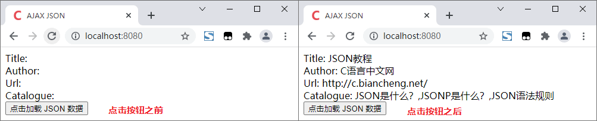

Ajax获取JSON数据
Ajax 全称“Asynchronous JavaScript and XML”，译为“异步 JavaScript 和 XML”，程序员们习惯称之为“阿贾克斯”，通过 Ajax 我们可以异步在服务器与客户端之间传递数据。在 Ajax 中，普遍使用 JSON 作为传输数据的格式。
一般情况下，我们可以通过 JavaScript 来发送 Ajax 请求，并接收响应的信息。下面通过一个示例来演示一下（有关 Ajax 的详细介绍大家可以查阅《JavaScript Ajax请求》一节）：
一般情况下，我们可以通过 JavaScript 来发送 Ajax 请求，并接收响应的信息。下面通过一个示例来演示一下（有关 Ajax 的详细介绍大家可以查阅《JavaScript Ajax请求》一节）：
<!DOCTYPE html>
<html lang="en">
<head>
<meta content="text/html; charset=utf-8">
<title>AJAX And JSON</title>
<script type="application/javascript">
function load() {
var url = "./data.json"; // 获取 JSON 数据的链接
var request;
if (window.XMLHttpRequest) {
request = new XMLHttpRequest(); //发送 Ajax 请求，适用于 Chrome, mozilla 等浏览器
} else if (window.ActiveXObject) {
request = new ActiveXObject("Microsoft.XMLHTTP"); // 发送 Ajax 请求，适用于 IE 浏览器
}
request.onreadystatechange = function() {
if (request.readyState == 4) {
var jsonObj = JSON.parse(request.responseText); // 解析 JSON 数据
document.getElementById("title").innerHTML = jsonObj.title;
document.getElementById("author").innerHTML = jsonObj.author;
document.getElementById("url").innerHTML = jsonObj.url;
document.getElementById("catalogue").innerHTML = jsonObj.catalogue;
}
}
request.open("GET", url, true);
request.send();
}
</script>
</head>
<body>
Title: <span id="title"></span><br />
Author: <span id="author"></span><br />
Url: <span id="url"></span><br />
Catalogue: <span id="catalogue"></span><br />
<button type="button" onclick="load()">点击加载 JSON 数据</button>
</body>
</html>
上面代码中使用到的 date.json 文件中的内容如下：
{
"title": "JSON教程",
"author": "C语言中文网",
"url": "http://c.biancheng.net/",
"catalogue": [
"JSON是什么？",
"JSONP是什么？",
"JSON语法规则"
]
}
提示，上述代码需要在服务器环境中才能运行，运行之后点击网页中的按钮即可获取指定的 JSON 数据，并将数据显示到网页中，如下图所示：

图：通过 Ajax 获取 JSON 数据
图：通过 Ajax 获取 JSON 数据
关注公众号「站长严长生」，在手机上阅读所有教程，随时随地都能学习。内含一款搜索神器，免费下载全网书籍和视频。

微信扫码关注公众号